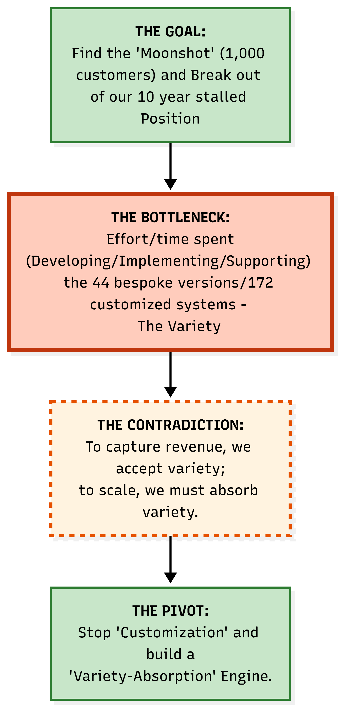
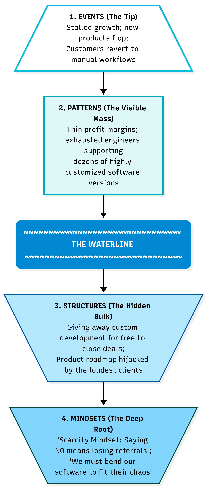
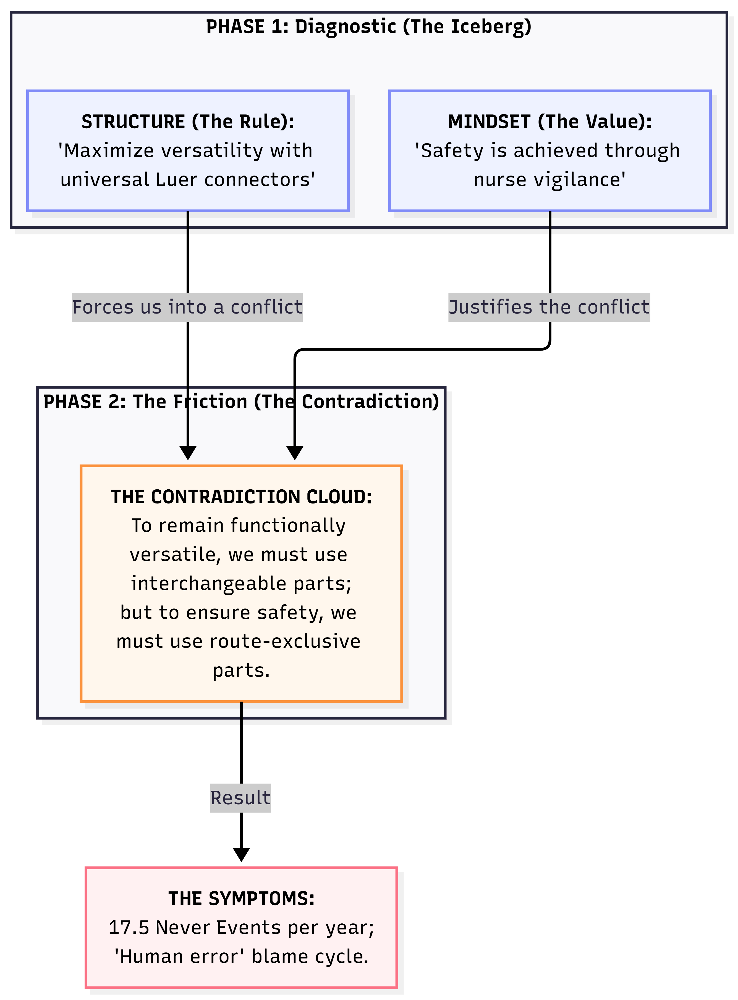
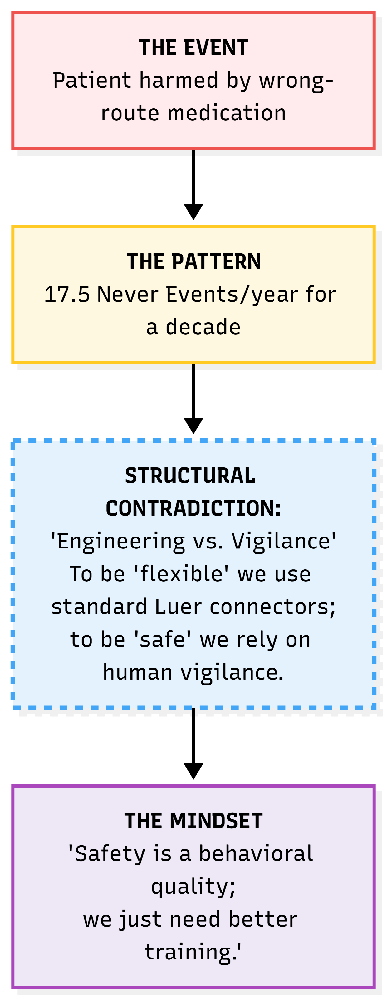

The Moonshot Protocol
A fishbone diagram or a 5 Whys analysis tells you what is causing a problem. The Moonshot Protocol is the method for the harder question that follows: what would it take to actually achieve zero — zero recurrence, zero harm, zero workaround — and what's stopping us getting there. It is a three-phase, ten-step process that starts from the goal you actually want, not the failure you're trying to stop.
The name is deliberate, not decorative. A “Super RCA” or “Deep Dive Investigation” starts from the failure and works backwards — the framing is forensic, defensive, about blame and paperwork. A Moonshot starts from the goal: not “why did this go wrong” but “what would it take to make this impossible to go wrong, ever, and what are we prepared to redesign to get there.” Kennedy didn't frame the 1961 commitment as fixing why rockets kept failing — he framed it as landing a man on the moon. Same redirection of energy here: the process investigates the past in Phase 1, but it commits to a future state in Phase 2, and it reclaims and redeploys capacity toward that future state in Phase 3. The mission comes first; the failure analysis is in service of it, not the other way round.
A second domain — the same goal-first structure outside healthcare
The wrong-route medication case later on this page is an NHS patient safety example. The structure holds equally well outside healthcare. Here is the same four-part shape — goal, bottleneck, contradiction, pivot — applied to a business stuck in a ten-year stalled position, illustrating the principle that the Moonshot is the goal stated positively, not the failure stated negatively.

A four-box compressed view of Phases 1–2 (figures illustrative). The Goal is stated as a positive target — 1,000 customers — not as “stop the stalling.” The Bottleneck and Contradiction are Phase 1 Steps 3–6 condensed; the Pivot is the Phase 2 dissolution. This compressed view is useful for a one-slide summary; the full ten-step table below is what you actually work through.
The contradiction here is a TRIZ Segmentation case, the same family of fix as ENFit in the medical example: “to capture revenue we accept variety, to scale we must absorb variety” doesn’t resolve by choosing one side — it resolves by separating where variety is absorbed. A variety-absorption engine takes customer-specific variation in at one defined layer of the system rather than letting it propagate into 44 separate bespoke codebases. The business stops asking “should we accept this customer’s custom request?” (the false choice) and starts asking “does our absorption layer already handle this category of variation?” (the redesigned question).
The Moonshot Protocol is not a fourth thing alongside 5 Whys, fishbone, PDSA, and the 7-step method — it is what running all six steps of the Visibility Loop looks like when the goal requires dissolving a structural contradiction, not just naming a cause. Phase 1 (Diagnostic) completes Loop Steps 1–3: see it, see the structure, name the belief. Phase 2 (Resolution) is entirely Loop Step 4: design the intervention. Phase 3 (the Pivot) completes Loop Steps 5 and 6: verify, and ask what's now visible that wasn't before.
One name, one page
This process has previously been referred to on this site as both the “Moonshot Process” and the “Moonshot Protocol.” This page is now the single canonical source — the Moonshot Protocol — and every other page on the site links here rather than re-explaining it.
Should you be here at all?
Not every recurring problem warrants the full ten-step Protocol. Whether a single observation, a light 5 Whys, or this full structural process is the right starting point is decided by the rule of three, which lives on the Root Cause Analysis page since it applies to every level of investigation, not just this one. If you’ve already worked through that rule and confirmed a genuine recurring structural pattern — not a one-off — the ten steps below are where you start.
The three-phase process

Phase 1 finds the structural cause. Phase 2 dissolves the contradiction keeping it in place. Phase 3 reclaims the capacity that was being consumed by the problem and redirects it toward the improvement goal.
| Phase | Step | What you do | QI tool |
|---|---|---|---|
| Phase 1 The Diagnostic |
1 | Define the unacceptable event in one data-backed sentence (e.g. “17.5 wrong-route medication errors per year for a decade”) | Bootstrap CUSUM to confirm the rate is stable — common cause, not improving |
| 2 | Map patterns — list recurring symptoms, run 5 Whys to find the immediate mechanical trigger | 5 Whys, fishbone diagram | |
| 3 | Audit the structure — look past the trigger to the rules, workflows, and physical environments that allow it to happen | Process mapping, Going to the Gemba | |
| 4 | Triage by Joiner level — classify all potential fixes. Levels 1–2 are containment. Levels 3–4 are structural design. The higher the level, the more effective — and the more politically difficult. | Joiner levels of fix | |
| 5 | Expose the hidden belief — identify the assumption that justifies the current structure (e.g. “safety is achieved through nurse vigilance”) | Pre-mortem, constraint interview | |
| Phase 2 The Resolution |
6 | Identify the contradiction — express the trade-off that makes the structural fix seem impossible | Evaporating Cloud |
| 7 | Dissolve via TRIZ separation — do not compromise. Redesign the system to separate the conflicting goals in space, time, condition, or system level | TRIZ separation principles | |
| 8 | Verify for evolution — ensure the solution allows future improvement. If it locks the system down so much that improvement becomes impossible, iterate. | PDSA cycle | |
| 9 | Sunset the backdoor — identify the old dangerous path and explicitly migrate away from it. The sunset is not a wall; it is a bridge to a safer architecture. | Change management, policy | |
| Phase 3 The Pivot |
10 | Reclaim and redeploy — the capacity that was being consumed by the recurring problem is now available. Redirect it toward the improvement goal. | Bootstrap CUSUM pre-committed prediction to confirm the change point |
Worked example — wrong-route medication Never Events
17.5 wrong-route medication errors per year for a decade. Classified as “wholly preventable.” Yet they kept recurring. The reason: the process stopped at the human (the nurse who made the error) rather than the system (the connector design that made the error possible). Here is what the full Moonshot Protocol looks like applied to this case.

The left chain shows what the 5 Whys reveals. The right chain shows the Joiner level of fix appropriate at each level. The structural fix (Level 3: ENFit connector mandate) makes the error physically impossible — without relying on human vigilance.

Phase 1 of the Moonshot Protocol works down through these same four levels — Event, Pattern, Structure, Mindset — before Phase 2 attempts a fix.
The most common RCA failure is stopping at the person. Retraining addresses a Level 1 symptom. The structural question is: what system feature allowed a trained nurse to make this error without any physical barrier preventing it?
The answer is in the equipment design: oral medication syringes (Luer connectors) were physically compatible with IV lines. The connector design made the error possible. No amount of retraining changes the physics. The Level 3 fix — ENFit non-interchangeable connectors — makes wrong-route administration physically impossible. The fix is in the design, not the person.
The test: “If I am still relying on human willpower or vigilance to avoid the error, have I actually solved it?” If the answer is yes, you are still in the danger zone. Iterate on the design.
The “5” in 5 Whys is a rule of thumb, not a formula. The real question is: have you reached the Mindset level? Here are the questions to ask at each level of the Iceberg.
Why 1 — Questions to uncover the Pattern
You are proving to leadership that this is not an isolated accident. You are looking for history, frequency, and correlation.
- “Have we seen this exact failure, or a near-miss, in the last six months?”
- “What conditions are always present when this happens? Does it only happen on the night shift? Only during a software release?”
- “We tried to fix this last year — why did that previous fix fail to stop it this time?”
Whys 2 and 3 — Questions to uncover the Structure
You are looking for the physical, digital, and procedural rules that made the error possible. You are actively taking the blame off the human.
- “What physical or digital mechanism allowed the user to make this mistake? Why does the system allow this without a second check?”
- “Was the correct tool or information immediately available? If not, why?”
- “How does our current workflow make doing the wrong thing easier or faster than doing the right thing?”
- “If there is a rule or checklist in place, why is it structurally easier to bypass it than to follow it?”
Whys 4 and 5 — Questions to uncover the Mindset
The hardest level to reach because people are afraid to talk about it. You know you have reached it when answers shift from tools and processes to incentives, budgets, and fears.
- “Why do we accept this broken process as ‘just the way things are’?”
- “What behaviour does leadership actually reward? Do we reward the nurse who is fast, or the one who is safe?”
- “What would realistically happen to an employee who stopped the line to fix this?”
- “Why hasn’t the budget or time been allocated to permanently fix this structure?”
Applied to the Never Events example:
- Why 1 (Pattern): Nurses on this ward frequently use Luer syringes as workarounds
- Why 2 (Structure): Pharmacy frequently sends oral medications in incompatible syringes
- Why 3 (Structure): Pharmacy software doesn’t force selection of a safety syringe by medication route
- Why 4 (Mindset): IT and Procurement haven’t prioritised upgrading the pharmacy software
- Why 5 (Mindset): Leadership views safety upgrades as a sunk cost and prioritises revenue-generating equipment over operational safety
Identifying and dissolving the contradiction
Phase 2 is what the Moonshot Protocol adds that most RCA methods miss: explicitly naming the trade-off that makes a structural fix feel impossible, then dissolving it rather than compromising on it. This is the Evaporating Cloud applied to a contradiction the team may never have stated out loud.
The contradiction itself sits exactly between the Structure and the Mindset on the Iceberg: the Structure forces the conflict (a rule that creates two incompatible requirements), and the Mindset justifies tolerating it (a belief that makes the conflict feel acceptable or even necessary). Naming both, separately, before stating the contradiction is what makes the contradiction precise enough to dissolve rather than just complain about.

The Structure (a rule) and the Mindset (a value) are two separate things on the Iceberg. The Structure forces the conflict; the Mindset justifies it. Both must be named before the Contradiction Cloud can be stated precisely.

Event, Pattern, Structural Contradiction, Mindset — the same four Iceberg levels as the introductory diagram, applied end to end to one case.

The same Goal → Bottleneck → Contradiction → Pivot shape used in the business worked example earlier on this page — the structure holds whether the goal is zero Never Events or 1,000 customers.
None of the dissolutions on this page ask the hospital to compromise between versatility and safety. Each one removes the false choice by separating the conflicting requirement into a different dimension — space (a different connector shape per route), condition (colour coding so the wrong choice is visually obvious before connection), or system (removing the universal connector from the supply chain entirely). This is TRIZ Principle 1, Segmentation, doing the work.
Two key principles to prevent recurrence

Principle 1: Human error is a symptom, never a root cause. Design environments where the wrong choice is hard and the right choice is easy. Principle 2: All humans and processes will eventually fail — aim for safe failure, not perfect prevention.
These two principles hold throughout every phase of the Protocol. Principle 1 is what stops Phase 1 from stopping early at the person. Principle 2 is what makes Phase 2's dissolution robust even when it isn't yet fully implemented — a partial rollout should still fail safely, not catastrophically.
The sunset and migration — what it looks like in practice

The sunset is not a wall — it is a bridge. The old dangerous path is explicitly replaced with a superior safe path. The capacity previously spent managing the risk is reclaimed and redeployed.
This is Phase 3 — the Pivot. The point of reclaiming capacity is not just risk reduction; it is that the staff time, the management attention, and the budget that were being consumed by managing the recurring problem are now available to redeploy toward the original improvement goal. This is the step most structural fixes skip, leaving the win unmeasured and the freed capacity unclaimed.
Closing the loop with Bootstrap CUSUM
The three-phase process produces a structural change. Bootstrap CUSUM applied to the outcome metric — wrong-route medication events per month — confirms whether the change point appeared after the ENFit rollout, and whether it is sustained.
The pre-committed prediction: “Wrong-route medication events will fall to zero within 12 months of full ENFit connector rollout across all wards.” If the Bootstrap CUSUM flat line persists after rollout, either the rollout is incomplete, or the connector was not the binding constraint. Both are valuable learning — and both send you back to Phase 1, Step 3, to audit the structure again.
See Never Events: Wrong-Route Medication for the Bootstrap CUSUM analysis of NHS Never Event data.
This is the Visibility Loop's Step 5: test honestly. Phase 1 of the Moonshot Protocol is Loop Steps 1–3 (see it, see the structure, name the belief). Phase 2 is Loop Step 4 (design the intervention). Bootstrap CUSUM at the end of Phase 3 closes Loop Step 5 — and Phase 3's redeployed capacity is what makes Loop Step 6 possible: with the old problem solved and capacity freed, what is now visible that wasn't before?